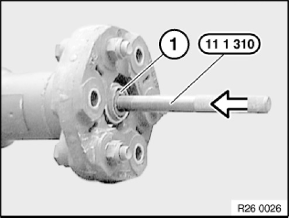
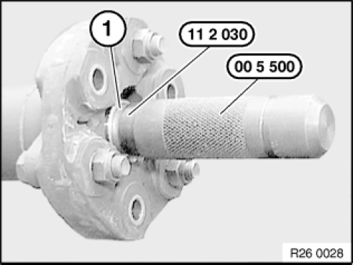
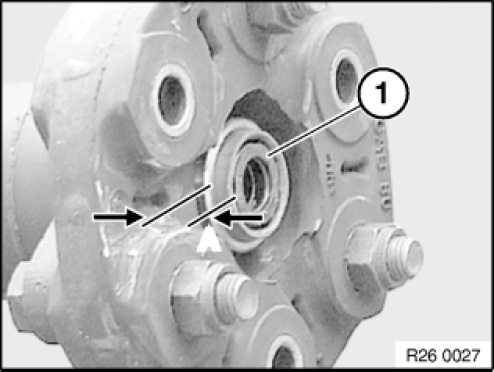

26 11 090 Removing and Installing/Replacing Rear Centering Mount for Propeller Shaft
26 11 090 Removing and installing/replacing front centring mount for propeller shaft
Special tools required:

Necessary preliminary tasks:
- Remove propeller shaft.

Completely fill centring bore hole (1) with viscous grease.
Drive special tool 11 1 310 with a plastic hammer into centring bore hole.
The centring bearing (1) is forced out of the propeller shaft by the pressure on the grease filling.
If necessary, top up grease repeatedly.
NOTE: To drive out the bearing, you can also fill the centring bore hole with water instead of grease.

Installation note:
Remove grease/water from mount bore.
Drive in centring mount (1) with special tools 11 2 030 and 00 5 500 into propeller shaft (observe protrusion).
Grease centring mount.
- Grease: BMW Service Operating Fluids.

Installation note:
Observe protrusion A = 4(+2) mm of centring (1).